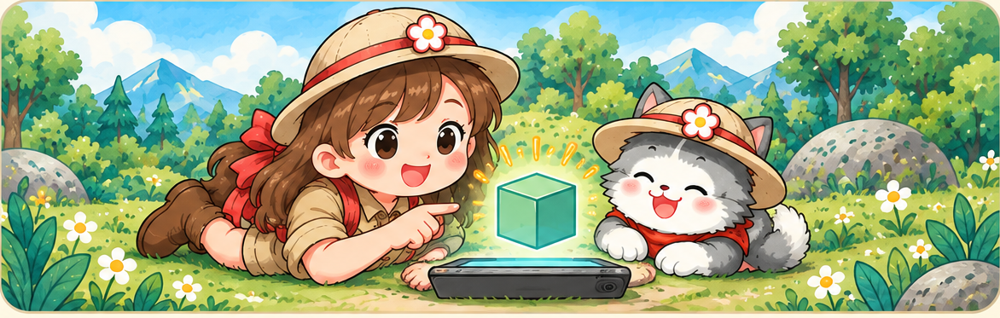

🧩 Teroka Bentuk 3D

Jom Teroka Bentuk 3D!
Pilih bentuk. Seret objek untuk memutarnya, atau gunakan butang zum. Teroka setiap bentuk dari pelbagai sudut untuk mengenali permukaan, bucu dan tepi.
🔷 Prisma — mempunyai dua tapak yang sama bentuk dan saiz.
🌿 Bukan Prisma — bandingkan cirinya dengan prisma.
Kubus
Memuatkan model 3D…
Tip: Seret ke kiri/kanan atau atas/bawah untuk memusingkan bentuk dalam semua arah. Model 3D memerlukan sambungan internet untuk memuatkan Three.js.
🔍 Kenali Bentuk
Prisma segi empat sama (kubus) mempunyai 6 permukaan rata, 8 bucu dan 12 tepi.